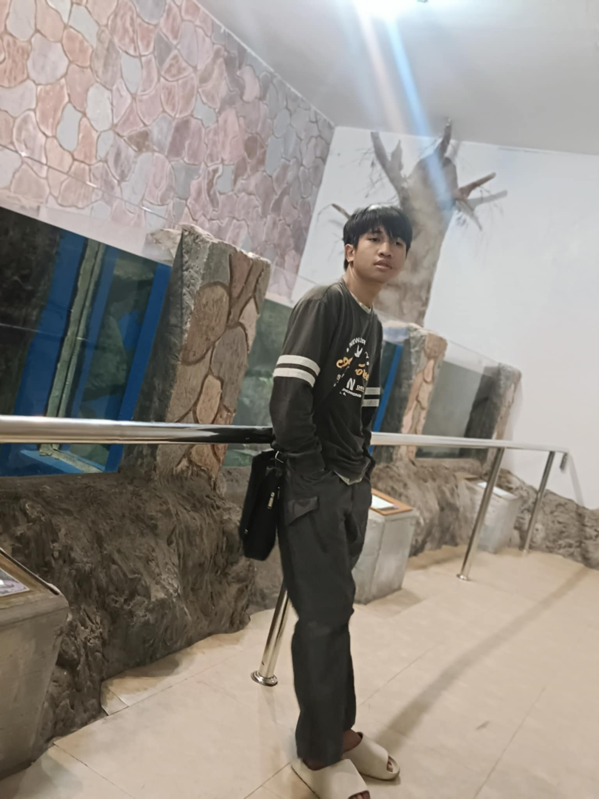
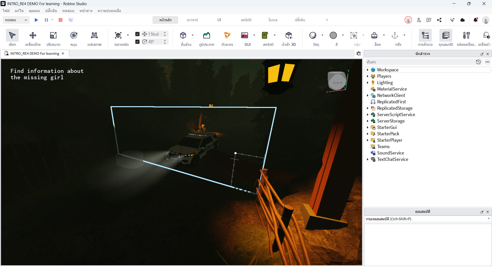
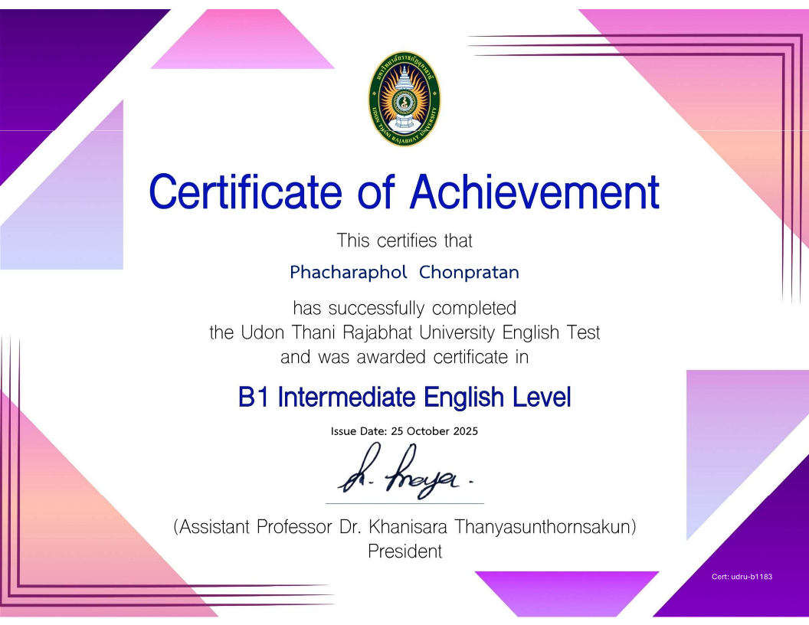
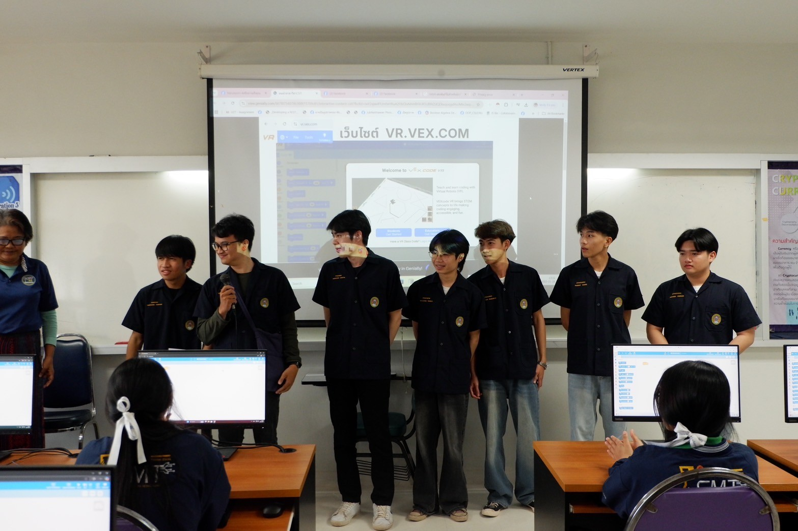

นักศึกษาสาขาวิทยาการคอมพิวเตอร์ สนใจพัฒนาเว็บและระบบฐานข้อมูล

สวัสดีครับ ผม นายพชรพล นักศึกษาปี 2 คณะวิทยาศาสตร์ สาขาวิทยาการคอมพิวเตอร์ ปัจจุบันกำลังมุ่งเน้นการเรียนรู้ด้าน AI และ Data Science เพื่อพัฒนาทักษะในการวิเคราะห์ข้อมูลและการเขียนโปรแกรม

(คำอธิบาย) : โปรเจกต์ เกม Roblox ที


เป้าหมายในอนาคตของผมคือการได้ทำงานในตำแหน่ง Data Analyst หรือ Web Developer และ Game development และสนใจหาประสบการณ์ฝึกงานที่เกี่ยวข้องกับการเขียนเกม